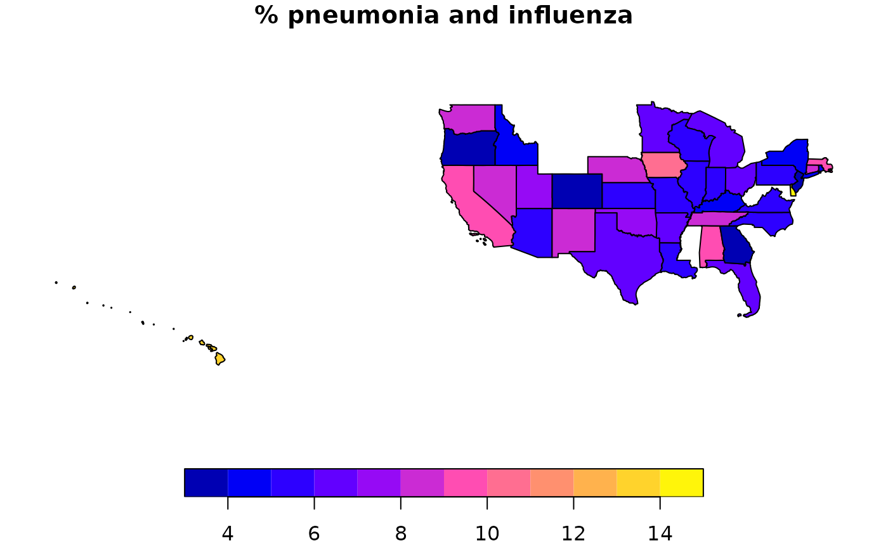

Performing Multidimensional Queries (also Including Geographic Attributes)
Source:vignettes/v70-star_query.Rmd
v70-star_query.RmdIntroduction
Once we developed a star database in R using the rolap
package, in addition to exporting it to exploit it with other tools, we
can perform multidimensional queries from R: The rolap
package provides the functionality to define geographic attributes and
formulate and execute simple queries on a multidimensional schema that
includes them.
The main objective of this document is to show the multidimensional query formulation and execution functionality offered by this package. First, the data model is briefly discussed: the possibility of defining stars and constellations. Then, the geographic attributes definition functionality is also shown. Next, the functions defined to support multidimensional queries are presented. Finally, finish with the conclusions.
Stars and constellations
Strictly speaking, a star is composed of a fact table and
several associated dimension tables. A constellation is made up
of several stars that can share dimensions. In the rolap
package they are treated in a unified way under the
star_database class: It is used both to define stars and
constellations.
The variable mrs_db, obtained in the vignette titled
Obtaining and transforming flat tables,
vignette("v05-flat-table-op"), contains an object of class
star_database that we will use in the example.
class(mrs_db)
#> [1] "star_database"We can see a representation of the tables it contains using the
draw_tables() function, as shown below.
mrs_db |>
draw_tables()We can see that it is a constellation because it contains more than one fact table.
Include geographic information layers
The rolap package allows us to include layers of
geographic information associated with dimension attributes. The
objective is to be able to obtain layers of geographic information with
the data contained in the multidimensional database.
In the considered case, the table of dimension where
contains geographical information in the form of the coordinates
(latitude and longitude) of each city. We can define the
city field as a geographic attribute.
mrs_db_geo <- mrs_db |>
define_geoattribute(
dimension = "where",
attribute = "city",
from_attribute = c("long", "lat")
)We can also associate the geographic information of a vector layer of points or polygons to an attribute (or set of attributes), using the same function.
mrs_db_geo <- mrs_db_geo |>
define_geoattribute(
dimension = "where",
attribute = "state",
from_layer = us_layer_state,
by = "STUSPS"
)The vector layer used is defined at the state level. If there is another field at another level of detail in the layer, the same layer can be used to define other attributes of coarser granularity.
mrs_db_geo <- mrs_db_geo |>
define_geoattribute(
dimension = "where",
attribute = "region",
from_layer = us_layer_state,
by = "DIVISION"
)If there is no field in the layer that allows us to establish the relationship, the information associated with other attributes of the dimension can be used.
mrs_db_geo_2 <- mrs_db_geo |>
define_geoattribute(
dimension = "where",
attribute = "region",
from_attribute = "state"
)If there are still unrelated instances of the dimension, the
define_geoattribute() function warns and the instances can
be consulted using the check_geoattribute_geometry()
function.
Through these functions we have defined relationships between the attributes and vector layers of geographic information, at the level of detail we need, which we can later take advantage of.
Query functions
A query is defined on a star_database object and the
result of executing it is another star_database object.
This section presents the functions available to define queries.
star_query()
From a star_database object, an empty
star_query object is created where we can select fact
measures, dimension attributes and filter dimension rows.
Example:
sq <- mrs_db_geo |>
star_query()At least one fact table with one dimension must be included in each query.
select_fact()
To define the fact table to be consulted, its name is indicated, optionally, a vector of names of selected measures and another of aggregation functions are also indicated. If the name of any of the measures is not indicated, the measure corresponding to the number of rows added will be included, which is always included. If no aggregation function is included, those defined for the measures are considered.
Examples:
sq_1 <- sq |>
select_fact(
name = "mrs_age",
measures = "all_deaths",
agg_functions = "MAX"
)The measure is considered with the indicated aggregation function. In addition, the measure corresponding to the number of grouped records that make up the result is automatically included.
sq_2 <- sq |>
select_fact(name = "mrs_age",
measures = "all_deaths")The measure is considered with the aggregation function defined in the multidimensional scheme.
sq_3 <- sq |>
select_fact(name = "mrs_age")Only the measure corresponding to the number of grouped records is included.
sq_4 <- sq |>
select_fact(name = "mrs_age",
measures = "all_deaths") |>
select_fact(name = "mrs_cause")In a query we can select several fact tables, at least we have to select one.
select_dimension()
To include a dimension in a star_query object, we have
to define its name and a subset of the dimension attributes. If only the
name of the dimension is indicated, it is considered that all its
attributes should be added.
Example:
sq_1 <- sq |>
select_dimension(name = "where",
attributes = c("city", "state"))Only the indicated attributes of the dimension will be included.
sq_2 <- sq |>
select_dimension(name = "where")All attributes of the dimension will be included.
filter_dimension()
Allows us to define selection conditions for dimension rows.
Conditions can be defined on any attribute of the dimension, not only on
attributes selected in the query for the dimension. They can also be
defined on unselected dimensions. Filtering is done using the function
dplyr::filter(). Conditions are defined in exactly the same
way as in that function.
Example:
sq <- sq |>
filter_dimension(name = "when", week <= " 3") |>
filter_dimension(name = "where", city == "Bridgeport")
run_query()
Once we have selected the facts, dimensions and defined the conditions on the instances of dimensions, we can execute the query to obtain the result.
The query can be executed on any star_database object
that has in its structure the elements that appear in it. If the
star_database has geographic information associated with
it, this will be filtered according to its conditions.
Example:
sq <- star_query(mrs_db_geo) |>
select_dimension(name = "where",
attributes = c("region", "state")) |>
select_dimension(name = "when",
attributes = "year") |>
select_fact(name = "mrs_age",
measures = "all_deaths") |>
select_fact(name = "mrs_cause",
measures = "all_deaths") |>
filter_dimension(name = "when", week <= " 3" & year >= "2010")
mrs_db_geo_3 <- mrs_db_geo |>
run_query(sq)
class(mrs_db_geo_3)
#> [1] "star_database"The result of running a query is an object of the
star_database class that meets the conditions defined in
the query: Other queries can continue to be defined on this object.
We can see a representation of the tables of the result, as shown below.
mrs_db_geo_3 |>
draw_tables()Exploitation of the result
This section shows an example of how to exploit the result of the multidimensional query.
The first thing we do is transform it into flat tables.
ft <- mrs_db_geo_3 |>
as_single_tibble_list()
ft_age <- ft[["mrs_age"]]Below are the rows of one of the result tables.
| year | region | state | all_deaths | nrow_agg_sq |
|---|---|---|---|---|
| 2010 | 2 | NJ | 1 | 1 |
| 2010 | 5 | VA | 50 | 5 |
| 2011 | 3 | IN | 65 | 4 |
| 2011 | 4 | MO | 115 | 5 |
| 2011 | 6 | AL | 165 | 5 |
| 2011 | 9 | CA | 44 | 5 |
| 2012 | 8 | NM | 122 | 5 |
| 2013 | 2 | NY | 23 | 5 |
| 2013 | 9 | WA | 72 | 5 |
| 2014 | 3 | OH | 327 | 5 |
| 2014 | 6 | TN | 70 | 5 |
| 2015 | 5 | FL | 175 | 5 |
| 2016 | 1 | MA | 20 | 5 |
| 2016 | 2 | NY | 74 | 10 |
| 2016 | 6 | KY | 98 | 5 |
| 2016 | 8 | CO | 58 | 5 |
| 2016 | 9 | CA | 14 | 5 |
From the results in the form of flat tables, pivottabler
package can be used to present it in the form of pivot tables.
Obtaining layers with geographic information
If in a star_database object we have attributes to which
geographic information has been associated, we can obtain geographic
information layers that include fact and dimension data.
To include only the data we need, using query operations we can
previously filter the star_database object. Once the
geographic information layer is obtained, it can also be filtered to
select the variables represented.
The following sections show how to obtain a geographic information layer and the operations that we can perform on it.
Get a geolayer object
From a star_database object with some attribute to which
we have associated geographic information (geoattribute), we
can obtain a geolayer object. If there is more than one, we
have to indicate the layer granularity geoattribute.
gl_state <- mrs_db_geo_3 |>
as_geolayer(attribute = "state")The geolayer object is composed of a layer of geographic
information at the level of detail of the geoattribute and another where
the variables of the recorded data are described.
layer_state <- gl_state |>
get_layer()
layer_state
#> Simple feature collection with 15 features and 16 fields
#> Geometry type: GEOMETRY
#> Dimension: XY
#> Bounding box: xmin: -124.8485 ymin: 24.39935 xmax: -69.86288 ymax: 49.00242
#> Geodetic CRS: WGS 84
#> # A tibble: 15 × 17
#> state region var_01 var_02 var_03 var_04 var_05 var_06 var_07 var_08 var_09
#> * <chr> <chr> <int> <int> <int> <int> <int> <int> <int> <int> <int>
#> 1 AL 6 NA NA 165 165 NA NA NA NA NA
#> 2 CA 9 NA NA 44 44 NA NA NA NA NA
#> 3 CO 8 NA NA NA NA NA NA NA NA NA
#> 4 FL 5 NA NA NA NA NA NA NA NA NA
#> 5 IN 3 NA NA 65 65 NA NA NA NA NA
#> 6 KY 6 NA NA NA NA NA NA NA NA NA
#> 7 MA 1 NA NA NA NA NA NA NA NA NA
#> 8 MO 4 NA NA 115 116 NA NA NA NA NA
#> 9 NJ 2 1 1 NA NA NA NA NA NA NA
#> 10 NM 8 NA NA NA NA 122 122 NA NA NA
#> 11 NY 2 NA NA NA NA NA NA 23 23 NA
#> 12 OH 3 NA NA NA NA NA NA NA NA 327
#> 13 TN 6 NA NA NA NA NA NA NA NA 70
#> 14 VA 5 50 50 NA NA NA NA NA NA NA
#> 15 WA 9 NA NA NA NA NA NA 72 72 NA
#> # ℹ 6 more variables: var_10 <int>, var_11 <int>, var_12 <int>, var_13 <int>,
#> # var_14 <int>, geom <GEOMETRY [°]>
var_state <- gl_state |>
get_variables()
var_state
#> # A tibble: 14 × 4
#> variable year facts measure
#> <chr> <chr> <chr> <chr>
#> 1 var_01 2010 mrs_age all_deaths
#> 2 var_02 2010 mrs_cause all_deaths
#> 3 var_03 2011 mrs_age all_deaths
#> 4 var_04 2011 mrs_cause all_deaths
#> 5 var_05 2012 mrs_age all_deaths
#> 6 var_06 2012 mrs_cause all_deaths
#> 7 var_07 2013 mrs_age all_deaths
#> 8 var_08 2013 mrs_cause all_deaths
#> 9 var_09 2014 mrs_age all_deaths
#> 10 var_10 2014 mrs_cause all_deaths
#> 11 var_11 2015 mrs_age all_deaths
#> 12 var_12 2015 mrs_cause all_deaths
#> 13 var_13 2016 mrs_age all_deaths
#> 14 var_14 2016 mrs_cause all_deathsWe can generate the geographic information layer so that it contains only the objects for which we have additional information, as we have done.
plot(sf::st_geometry(layer_state))
text(
sf::st_coordinates(sf::st_centroid(sf::st_geometry(layer_state))),
labels = layer_state$state,
pos = 3,
cex = 0.5
)We can also generate it for all objects in the original layer, even if they do not contain information.
layer_state_all <- gl_state |>
get_layer(keep_all_variables_na = TRUE)
plot(sf::st_shift_longitude(sf::st_geometry(layer_state_all)))Operations on variables
For the variables, in addition to being able to obtain them in
tibble format, we can consult for those whose name we
indicate or for all of their meaning, as shown below.
gl_state |>
get_variable_description(c("var_01", "var_10"))
#> var_01
#> "year = 2010, facts = mrs_age, measure = all_deaths"
#> var_10
#> "year = 2014, facts = mrs_cause, measure = all_deaths"
vd <- gl_state |>
get_variable_description()
vd[c("var_01", "var_10")]
#> var_01
#> "year = 2010, facts = mrs_age, measure = all_deaths"
#> var_10
#> "year = 2014, facts = mrs_cause, measure = all_deaths"The variables are a tibble and we can select them using
the dplyr::filter() function.
var_state_2 <- var_state |>
dplyr::filter(year == '2016')Once the variables we need have been filtered, we can filter the geographic information layer so that it will only contain these variables.
gl_state_2 <- gl_state |>
set_variables(var_state_2)
layer_state_2 <- gl_state_2 |>
get_layer()
plot(sf::st_geometry(layer_state_2))
text(
sf::st_coordinates(sf::st_centroid(sf::st_geometry(layer_state_2))),
labels = layer_state_2$state,
pos = 3,
cex = 0.5
)Data representation
For example, for each state we are going to represent the percentage of pneumonia and influenza deaths registered, starting in 2010. First of all, we must define the query.
sq_2 <- star_query(mrs_db_geo) |>
select_dimension(name = "where",
attributes = "state") |>
select_fact(name = "mrs_cause",
measures = c("pneumonia_and_influenza_deaths", "all_deaths")) |>
filter_dimension(name = "when", year >= "2010")We run the query and get a star_database object as a
result.
mrs_db_geo_3 <- mrs_db_geo |>
run_query(sq_2)We obtain a geolayer object.
gl_state_3 <- mrs_db_geo_3 |>
as_geolayer(attribute = "state")Finally, we represent it.
gl_state_3 |>
get_variable_description()
#> var_1
#> "measure = all_deaths"
#> var_2
#> "measure = pneumonia_and_influenza_deaths"
layer <- gl_state_3 |>
get_layer()
layer$tpc_deaths <- (layer$var_2 / layer$var_1) * 100
plot(layer[, "tpc_deaths"], main = "% pneumonia and influenza")
To maintain the definition of the new variable in the
geolayer object, we can define that this is the new
geographic information layer of it.
gl_state_3 <- gl_state_3 |>
set_layer(layer)If we want to treat the geographic information layer with another tool, we can export it along with the variable definition table in GeoPackage format.
f <- gl_state_3 |>
as_GeoPackage(dir = tempdir())
sf::st_layers(f)
#> Driver: GPKG
#> Available layers:
#> layer_name geometry_type features fields crs_name
#> 1 geolayer 39 4 WGS 84
#> 2 variables NA 2 2 <NA>Conclusions
This document presents some of the querying possibilities that offers
the rolap package. The queries are formulated on an object
of class star_database and the result is another object of
the same class on which additional queries can be made.
Queries can be formulated about a star or set of stars or constellation.
We can define attributes that have associated geographic information. If any of these geographic attributes are included in the result of a query, we obtain a geographic information layer in which the result of the query is defined in the form of variables that can be filtered and queried.